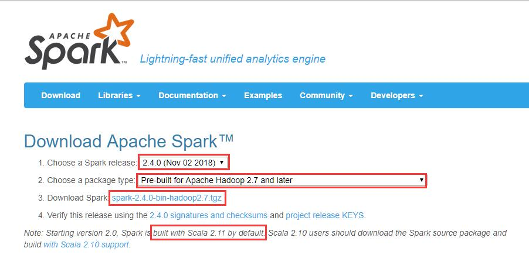
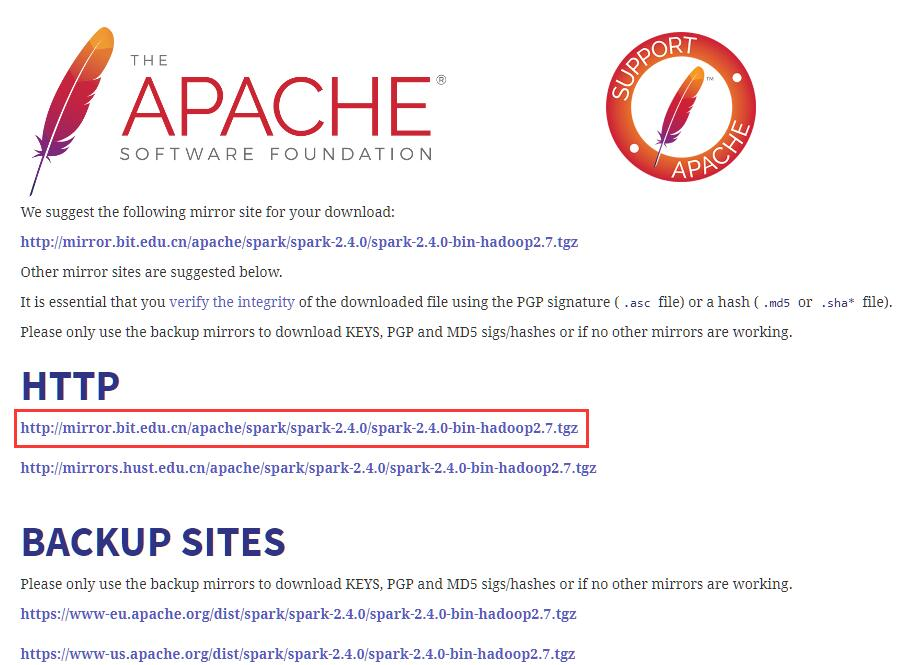
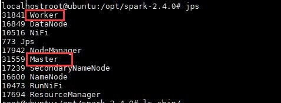
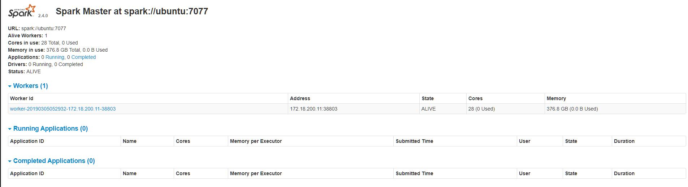
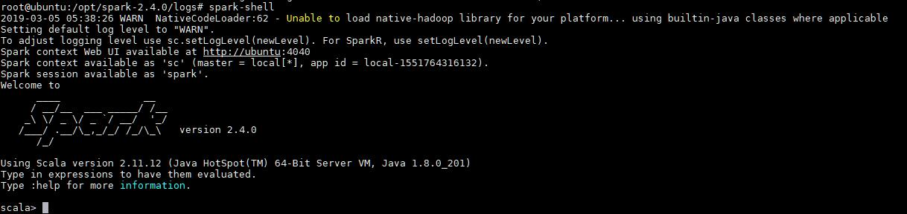

版本
- JDK: 8u221
- Scala: 2.12.9
- Hadoop: 3.1.2
- Spark: 2.4.4
下载
首先点击这里，进入Spark官网下载页面。

选择下载版本，以及Hadoop版本，然后点击tgz地址进行下载

选中官方推荐的地址即可下载，其他地址也可用（建议采用迅雷等下载工具下载，速度比较会快很多，上传至UBUNTU系统）
或者使用wget命令进行下载
1 | wget http://mirror.bit.edu.cn/apache/spark/spark-2.4.4/spark-2.4.4-bin-hadoop2.7.tgz |
配置
Spark部署模式总共有下面就几种
- local模式(单机模式)
- local
- local[k]
- local[*]
- cluster模式(多机模式)
- standalone
- mesos
- yarn
- yarn cluster
- yarn client
cluster模式肯定就是运行很多机器上了，但是它又分为以下三种模式，区别在于谁去管理资源调度。（说白了，就好像后勤管家，哪里需要资源，后勤管家要负责调度这些资源）
yarn模式又分为yarn cluster模式和yarn client模式：
- yarn cluster: 这个就是生产环境常用的模式，所有的资源调度和计算都在集群环境上运行。
- yarn client: 这个是说Spark Driver和ApplicationMaster进程均在本机运行，而计算任务在cluster上。
单机模式
local模式就是运行在一台计算机上的模式，通常就是用于在本机上练手和测试。它可以通过以下集中方式设置master。可以不进行任何配置，直接使用local部署模式运行
- local: 所有计算都运行在一个线程当中，没有任何并行计算，通常我们在本机执行一些测试代码，或者练手，就用这种模式。
- local[K]: 指定使用几个线程来运行计算，比如local[4]就是运行4个worker线程。通常我们的cpu有几个core，就指定几个线程，最大化利用cpu的计算能力
- local[*]: 这种模式直接帮你按照cpu最多cores来设置线程数了。
Standalone模式
下载完毕后，使用下面的命令，将hadoop解压出来，并移动到合适的位置，我解压到了/opt目录下
1 | tar -zxvf ./spark-2.4.4-bin-hadoop2.7.tgz -C /opt |
之后，需要配置以下的环境变量
使用vi命令编辑vi /etc/profile，添加下面的环境变量
1 | # SPARK |
添加完毕保存后，使用source /etc/profile更新环境变量
下面我们来验证一下看spark是否能正常启动
打开/opt/spark-2.4.4/conf/这个目录，使用cp spark-env.sh.template spark-env.sh，在最后端加入下面的参数
1 | export JAVA_HOME=/opt/jdk1.8.0_221 |
使用cp slaves.template slaves，然后将所有worker机器节点ip或者域名加入其中 ，单节点使用默认的localhost即可
启动Spark
之后通过下面的命令启动Spark
1 | start-mastar.sh |

启动完毕后可以使用jps命令查看启动的spark进程，如图表示，则说明我们已经将spark安装配置完毕了

可以访问 http://localhost:8088 查看所有任务的运行情况
案例测试
在控制台输入spark-shell

情况如图表示，则说明我们已经将spark安装配置完毕了
PI值计算
可使用下面的命令来计算PI值
1 | run-example SparkPi 10 |